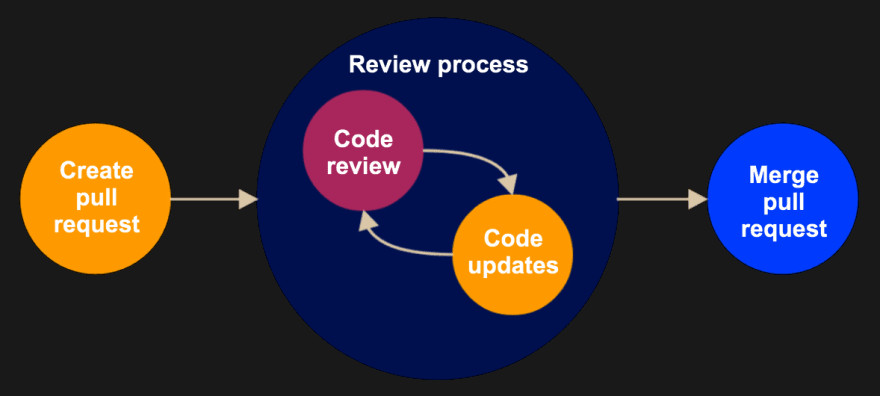

Sustainable software and data
open and community driven software development
Marius Paul Isken
GFZ German Research Centre for Geosciences, Potsdam · QuakeSaver GmbH

Introduction
- Sustainable software development
- Open Data
- Publishing software and data
Why is this important?
- Scientific code is as important as the paper
- Discuss implementations with peers
- Tools can be shared 🔥
What is sustainable software?
- Open access → git / GitHub
- Readable
- Maintainable
- Modular and extensible
🐿️ Open to the community, engagement to collaboration.
Readable code 📚
- Reading code takes as much time as writing it
- Code review, collaboration and extensibility
Code is Communication
for i in all_data:
p.add(i)
l = len(p)
def sel_eq(c, x, r, time):
...
Be explicit, be clear.
for earthquake in catalog:
selected_earthquakes.add(earthquake)
total_earthquakes = len(selected_earthquakes)
def select_earthquakes(catalog, max_distance, max_depth, sort=False):
...
Principle of self-documenting code.
Avoid comments where not
necessary.
Code is communication
for earthquake in catalog:
selected_earthquakes.add(earthquake)
total_earthquakes = len(selected_earthquakes)
def select_earthquakes(catalog, max_distance, max_depth, sort=False):
"""Select earthquakes within a given distance and depth range.
Args:
catalog (EarthquakeCatalog): Earthquake catalogue to select from.
max_distance (float): Maximum spherical distance in meters.
max_depth (float): Maximum depth in meters.
sort (bool, optional): Limit number of earthquakes. Defaults to False.
"""
...Function documentation. Automatically generate online documentation.
Code Formatting
Code styles can look different. It shouldn't!
def select_earthquakes(catalog,max_distance,max_depth,sort = False):
if catalog==None: return
total_earthquakes=len(catalog)
selected_earthquakes= set()
for earthquake in catalog:
selected_earthquakes.add(
earthquake
)
...
Code Formatting
Every code looks different. It shouldn't!
def select_earthquakes(catalog, max_distance, max_depth, sort=False):
if catalog is None:
return
total_earthquakes = len(catalog)
selected_earthquakes = set()
for earthquake in catalog:
selected_earthquakes.add(earthquake)
...
Use autoformatters and linters.
- Python: black / autopep8 / flake8
- Matlab: mlint
Leverage modern editors
Modern IDEs automate tasks and provide contextual information.

- Autocompletion
- Formatting
- Linting / static code analysis
→ Smooth workflow, fewer bugs
Programming Patterns

e.g. observer pattern / Credit: refactoring.guru
Design Patterns: Elements of Reusable Object-Oriented Software (1994)
Programming Patterns
Credit: refactoring.guru
Unittests
Write small snippets of code testing your functions.
def test_modelling():
assert my_model == expected_data
plot(my_model)
Ensures stability and collaboration
Git Workflow
Collaboration with colleagues and peers.
Use code reviews, get out there and stand the critic.
Code reviews
Packaging Software -> Accessibility
DevOps: Automation through CI/CD
GitHub Actions: Quality assurance through continuous integration (CI)
name: Lint
on: [push, pull_request]
jobs:
lint:
runs-on: ubuntu-latest
steps:
- uses: actions/checkout@v2
- uses: psf/black@stable
To publish a Python package, just use:
name: Build
on: [push, pull_request]
jobs:
build_wheels:
name: Build wheels on ${{ matrix.os }}
runs-on: ${{ matrix.os }}
...
Put these files in .github/workflows/lint.yaml
Open Data
Finding the right format
Clear language (Metadata
)Provide a library
Definition of APIs
Publishing Software and Data
Referencing and citations 🎓
Zenodo
Easy DOIs on data and software, not reviewed.
JOSS
The Journal of Open Source Software, peer-reviewed.
Short papers displaying methods and maturity of your software.